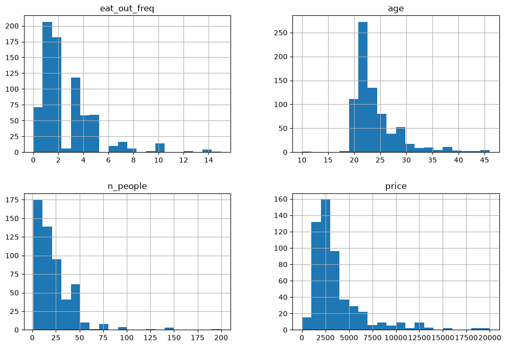

from pathlib import Path
import matplotlib.pyplot as plt
import numpy as np
import pandas as pd
from sklearn.compose import ColumnTransformer, make_column_transformer
from sklearn.impute import SimpleImputer
from sklearn.model_selection import cross_val_score, cross_validate, train_test_split
from sklearn.neighbors import KNeighborsClassifier
from sklearn.pipeline import Pipeline, make_pipeline
from sklearn.preprocessing import OneHotEncoder, OrdinalEncoder, StandardScaler
%matplotlib inline
pd.set_option("display.max_colwidth", 200)
DATA_DIR = Path.cwd() / "data"
data_path = DATA_DIR / "cleaned_restaurant_data.csv"
if not data_path.is_file():
raise FileNotFoundError(
f"Dataset not found: {data_path}. Start the notebook from content/classes/varada."
)Chapters 5 and 6: From messy data to a preprocessing pipeline
Can we predict whether someone likes a restaurant from their survey response? In this demo, our task is to predict a respondent’s “like” or “dislike” label from the rest of their restaurant survey response. This is a teaching example for preprocessing mixed data types, rather than a restaurant recommendation system. Comments may directly express the answer, so strong performance does not mean we can predict someone’s preferences before a visit.
We already know how to fit and compare models. Today we will make that workflow work with missing values, different scales, categories, and text.
Recall our machine learning workflow
- Define the prediction problem and identify the inputs and target.
- Reserve a test set before exploring the data.
- Explore the training data and establish a dummy baseline.
- Compare models using cross-validation on the training data.
- Once choices are settled, refit on all training data and evaluate once on the test set.
Discuss before starting: where does preprocessing belong? What must be learned from training data only?
Our guiding rule: each validation fold must stay unseen while both preprocessing and the model are fitted. We will deliberately show two incorrect cross-validation examples, then repair them with pipelines. The test set stays reserved throughout this demo.
Setup and imports
Run this notebook from content/classes/varada, with this directory’s .venv selected as the kernel. From this directory you can also run:
uv run --locked jupyter lab lecture-05-06-preprocessing-demo.ipynbThe dataset is stored in data/cleaned_restaurant_data.csv. Run cells in order; commented-out failure examples are optional discussion exercises.
Data and splitting
We will use the restaurant survey data. Each row describes one respondent’s restaurant experience. The target is that respondent’s reported like or dislike label, and the inputs are the other fields in their completed survey.
This task asks us to infer a satisfaction label from an existing response. Features such as comments and the assessment of the server describe an experience that has already happened. We are not estimating an intrinsic restaurant rating or learning an individual’s preferences across visits.
Inferring satisfaction could be useful when comments are available but explicit ratings are missing. Here, the survey already collects the label, so the practical value is limited. We use it to learn how to preprocess mixed data types.
Discuss: could a model score well on this task without being useful for deciding where someone should eat next?
df = pd.read_csv(data_path)# Reserve test rows before inspecting values or choosing cleaning rules.
train_df, test_df = train_test_split(df, test_size=0.2, random_state=123)
train_df.head()| north_america | eat_out_freq | age | n_people | price | food_type | noise_level | good_server | comments | restaurant_name | target | |
|---|---|---|---|---|---|---|---|---|---|---|---|
| 934 | Yes | 4.0 | 21 | 30.0 | 30.0 | Canadian/American | low | Yes | The building and the room gave a very comfy feeling. Immediately after sitting down it felt like we were right at home. | NaN | like |
| 306 | No | 8.0 | 27 | NaN | NaN | NaN | NaN | NaN | NaN | NaN | dislike |
| 918 | Yes | 2.0 | 23 | 80.0 | 40.0 | Other | low | Yes | The food was amazing and was extremely unique! | Chambar Restaurant | like |
| 568 | Yes | 3.0 | 22 | NaN | NaN | NaN | NaN | NaN | NaN | NaN | like |
| 684 | No | 5.0 | 22 | 3.0 | 12.0 | Other | no music | Yes | Tonkatsu number one | Nori | like |
❓❓ Questions for you
You have this restaurant dataset. Suppose you want to train a decision tree, KNN, or SVC to predict a respondent’s reported satisfaction label from the other fields in their completed survey.
Can we just call
fiton the training data? If not, what hurdles would we face?Can the model handle NaNs directly?
What to do with strings like food_type?
How to deal with free-form
comments?
Do all models care if
priceandageare on different scales?
Should we keep
restaurant_name?
Do we need to encode
like/dislikeas numbers?
| Challenge | Why is it a problem? | Examples from dataset |
|---|---|---|
| Missing values | Many ML models in sklearn cannot handle NaNs directly |
price, food_type, noise_level |
| Categorical (string) data | Models expect numeric input, not raw strings | north_america, food_type, noise_level |
| Text features | Free text must be vectorized before use | comments |
| Feature scaling | Features on different scales can distort distance-based models (KNN, SVC) | age, price, n_people, eat_out_freq |
| High-cardinality features | Can overfit or be uninformative if encoded naively | restaurant_name |
| Target encoding | Sklearn allows categorical target labels | target (like / dislike) |
Preprocessing is about making the raw dataset ready for machine learning.
We first need to figure out which transformations to apply on which features.
train_df.describe()| eat_out_freq | age | n_people | price | |
|---|---|---|---|---|
| count | 771.000000 | 771.000000 | 5.550000e+02 | 555.000000 |
| mean | 2.566550 | 23.906615 | 1.804252e+04 | 1835.646288 |
| std | 2.236869 | 4.408268 | 4.244753e+05 | 42446.209043 |
| min | 0.000000 | 10.000000 | 0.000000e+00 | 0.000000 |
| 25% | 1.000000 | 21.000000 | 1.000000e+01 | 17.500000 |
| 50% | 2.000000 | 22.000000 | 2.000000e+01 | 25.000000 |
| 75% | 3.000000 | 26.000000 | 3.000000e+01 | 40.000000 |
| max | 15.000000 | 46.000000 | 1.000000e+07 | 1000000.000000 |
Inspect training data and define the demo population
Which values look unusual? A high price is not automatically an error. For this exercise, we restrict the training examples to prices at most 200 and party sizes of at least one, keeping missing values for the imputation lesson. This is a teaching choice, not a general outlier-removal rule.
We leave the test set untouched. A final evaluation would need to state clearly whether it covers all responses or this restricted population.
upperbound_price = 200
lowerbound_people = 1
restaurant_df = train_df.loc[
~(train_df['price'] > upperbound_price)
& ~(train_df['n_people'] < lowerbound_people)
].copy()
restaurant_df.shape(755, 11)restaurant_df.describe()| eat_out_freq | age | n_people | price | |
|---|---|---|---|---|
| count | 755.000000 | 755.000000 | 539.000000 | 539.000000 |
| mean | 2.581536 | 23.916556 | 25.024119 | 33.346364 |
| std | 2.243054 | 4.427090 | 22.194087 | 28.230340 |
| min | 0.000000 | 10.000000 | 1.000000 | 0.000000 |
| 25% | 1.000000 | 21.000000 | 10.000000 | 18.000000 |
| 50% | 2.000000 | 22.000000 | 20.000000 | 25.000000 |
| 75% | 3.000000 | 26.000000 | 30.000000 | 40.000000 |
| max | 15.000000 | 46.000000 | 200.000000 | 200.000000 |
Our target is the respondent’s reported like or dislike label for this experience. We exclude target from the inputs and retain the other survey fields for our preprocessing exercises.
X_train = restaurant_df.drop(columns=['target']).copy()
y_train = restaurant_df['target'].copy()
X_test = test_df.drop(columns=['target']).copy()
y_test = test_df['target'].copy()A controlled teaching modification
We express training prices in cents to make the scale difference more visible. This changes units, not purchasing power. We also assign one training row a rare cuisine label so that a validation fold can contain a category absent from its fitting folds.
These are artificial examples, not data-cleaning recommendations. Any future test or deployment input would need the same price-unit conversion.
X_train['food_type'].value_counts()food_type
Other 186
Canadian/American 122
Chinese 100
Indian 38
Italian 34
Mexican 20
Fusion 17
Thai 16
fusion 6
Name: count, dtype: int64X_train.loc[X_train.index[0], 'food_type'] = 'Quebecois'
X_train['price'] = X_train['price'] * 100# Check alignment after filtering training rows.
assert X_train.index.equals(y_train.index)
X_train.shape, X_test.shape((755, 10), (193, 10))Exploratory data analysis
X_train.hist(bins=20, figsize=(12, 8));
Do you see anything interesting in these plots?
X_train['food_type'].value_counts()food_type
Other 186
Canadian/American 121
Chinese 100
Indian 38
Italian 34
Mexican 20
Fusion 17
Thai 16
fusion 6
Quebecois 1
Name: count, dtype: int64Error in data collection? Probably “Fusion” and “fusion” categories should be combined?
# Apply a fixed spelling correction identified from training data.
X_train['food_type'] = X_train['food_type'].replace("fusion", "Fusion")X_train['food_type'].value_counts()food_type
Other 186
Canadian/American 121
Chinese 100
Indian 38
Italian 34
Fusion 23
Mexican 20
Thai 16
Quebecois 1
Name: count, dtype: int64Again, usually we should spend lots of time in EDA, but let’s stop here so that we have time to learn about transformers and pipelines.
Modeling
Establish a dummy baseline
Before using the features, measure how well we can do by always predicting the most frequent training class. We use the same default five-fold classification splits for model comparisons below.
In cross_validate, test_score means the held-out validation fold, not our reserved test set.
from sklearn.dummy import DummyClassifier
dummy = DummyClassifier()
scores = cross_validate(dummy, X_train, y_train, return_train_score=True)
pd.DataFrame(scores)| fit_time | score_time | test_score | train_score | |
|---|---|---|---|---|
| 0 | 0.000546 | 0.000349 | 0.523179 | 0.518212 |
| 1 | 0.000285 | 0.000270 | 0.523179 | 0.518212 |
| 2 | 0.000268 | 0.000240 | 0.516556 | 0.519868 |
| 3 | 0.000253 | 0.000232 | 0.516556 | 0.519868 |
| 4 | 0.000251 | 0.000231 | 0.516556 | 0.519868 |
Compare the fold scores with the training target proportions below. What would a useful model need to improve on?
y_train.value_counts(normalize=True)target
like 0.519205
dislike 0.480795
Name: proportion, dtype: float64Let’s try KNN on this data
Do you think KNN would work directly on X_train and y_train?
# Preprocessing and pipeline
from sklearn.neighbors import KNeighborsClassifier
knn = KNeighborsClassifier()
# knn.fit(X_train, y_train)
- We need to preprocess the data before feeding it into machine learning models. What are the different types of features in the data? - What transformations are necessary before training a machine learning model? - Can we categorize features based on the type of transformations they require?
X_train[4:11]| north_america | eat_out_freq | age | n_people | price | food_type | noise_level | good_server | comments | restaurant_name | |
|---|---|---|---|---|---|---|---|---|---|---|
| 684 | No | 5.0 | 22 | 3.0 | 1200.0 | Other | no music | Yes | Tonkatsu number one | Nori |
| 97 | Yes | 2.0 | 26 | 25.0 | 3500.0 | Italian | high | No | seated at a very crowded area, didn't take our orders until 20 min later | NaN |
| 864 | No | 3.0 | 25 | NaN | NaN | NaN | NaN | NaN | NaN | NaN |
| 779 | Yes | 5.0 | 20 | NaN | NaN | NaN | NaN | NaN | NaN | NaN |
| 848 | Yes | 1.0 | 21 | NaN | NaN | NaN | NaN | NaN | NaN | NaN |
| 392 | Yes | 2.0 | 22 | 30.0 | 2500.0 | Other | high | Yes | temperature in the restaurant | Don't remember |
| 883 | Yes | 2.0 | 26 | 45.0 | 3500.0 | Chinese | medium | Yes | Fresh food, great taste, great service, great value for money | Hotpot on Broadway |
numeric_feats = ['age', 'n_people', 'price'] # Continuous and quantitative features
categorical_feats = ['food_type', 'north_america'] # Discrete and qualitative features
binary_feats = ['good_server'] # Categorical features with only two possible values
ordinal_feats = ['noise_level'] # Some natural ordering in the categories
noise_cats = ['no music', 'low', 'medium', 'high', 'crazy loud']
drop_feats = ['comments', 'restaurant_name', 'eat_out_freq'] # Omit these for now to focus on preprocessing; revisit comments laterX_train['north_america'].value_counts()north_america
Yes 404
No 343
Don't want to share 8
Name: count, dtype: int64X_train['good_server'].value_counts()good_server
Yes 392
No 142
Name: count, dtype: int64X_train.columnsIndex(['north_america', 'eat_out_freq', 'age', 'n_people', 'price',
'food_type', 'noise_level', 'good_server', 'comments',
'restaurant_name'],
dtype='str')X_train['food_type'].value_counts()food_type
Other 186
Canadian/American 121
Chinese 100
Indian 38
Italian 34
Fusion 23
Mexican 20
Thai 16
Quebecois 1
Name: count, dtype: int64X_train['north_america'].value_counts()north_america
Yes 404
No 343
Don't want to share 8
Name: count, dtype: int64X_train['good_server'].value_counts()good_server
Yes 392
No 142
Name: count, dtype: int64X_train['noise_level'].value_counts()noise_level
medium 230
low 174
high 74
no music 41
crazy loud 20
Name: count, dtype: int64Start with numerical features
Let’s build a KNN classifier using just age, n_people, and price. We will work through four steps:
- Find the missing values.
- Fill them using an imputer.
- Scale the features so their units do not dominate distances.
- Evaluate all these steps together using a pipeline.
For now, we use only training data. First we will inspect how the transformations work; then we will work out how to evaluate them correctly.
1. Can KNN use these columns as they are?
These columns are numerical, but that does not mean they are ready for KNN. Inspect a few rows, then count the missing values in each column.
X_train_num = X_train[numeric_feats].copy()
X_train_num.head()| age | n_people | price | |
|---|---|---|---|
| 934 | 21 | 30.0 | 3000.0 |
| 306 | 27 | NaN | NaN |
| 918 | 23 | 80.0 | 4000.0 |
| 568 | 22 | NaN | NaN |
| 684 | 22 | 3.0 | 1200.0 |
X_train_num.isna().sum()age 0
n_people 216
price 216
dtype: int64Discuss: how would KNN calculate a distance if one of the coordinates were missing?
KNN cannot fit data containing NaN. The commented line below is an optional failure example. We need to fill the missing values before fitting.
knn = KNeighborsClassifier()
# Optional: uncomment to see the missing-value error.
# knn.fit(X_train_num, y_train)2. Fill missing values with SimpleImputer
We will replace missing values with the median of their column. This involves two different operations:
fit: learn one median per column from the fitting rows.transform: fill missing entries using those stored medians, leaving observed entries unchanged.
First, inspect the values the imputer learns. These medians come from all training rows for this demonstration of the mechanics; we have not started cross-validation yet.
imputer = SimpleImputer(strategy="median")
imputer.fit(X_train_num)
pd.Series(imputer.statistics_, index=numeric_feats, name="Learned median")age 22.0
n_people 20.0
price 2500.0
Name: Learned median, dtype: float64X_train_num_imp = imputer.transform(X_train_num)
# Restore column names and row labels to inspect the returned array.
imputed_df = pd.DataFrame(
X_train_num_imp, columns=numeric_feats, index=X_train_num.index
)
imputed_df.head()| age | n_people | price | |
|---|---|---|---|
| 934 | 21.0 | 30.0 | 3000.0 |
| 306 | 27.0 | 20.0 | 2500.0 |
| 918 | 23.0 | 80.0 | 4000.0 |
| 568 | 22.0 | 20.0 | 2500.0 |
| 684 | 22.0 | 3.0 | 1200.0 |
# Every numerical column should now have zero missing values.
imputed_df.isna().sum()age 0
n_people 0
price 0
dtype: int64Check your understanding: if a new row has a missing price, do we calculate a new median or use the stored price median?
Use the stored median. New rows are transformed using what was learned during fitting.
KNN can now fit. The score below is training accuracy, so it only describes predictions on examples the model has already seen.
knn.fit(X_train_num_imp, y_train)
knn.score(X_train_num_imp, y_train)0.6701986754966888We have solved the missing-value problem. We have not yet measured generalization, and this training score is not a fair comparison with the dummy model’s validation score. Before evaluating, there is one more issue with our distances.
3. Put the numerical features on comparable scales
Earlier, we expressed price in cents. A price difference of 1,000 cents contributes much more to squared Euclidean distance than an age difference of 10 years. Changing currency units should not decide which neighbours matter most.
Inspect the ranges below. Which feature could dominate distance before scaling?
imputed_df.describe().loc[["mean", "std", "min", "max"]]| age | n_people | price | |
|---|---|---|---|
| mean | 23.916556 | 23.586755 | 3095.852980 |
| std | 4.427090 | 18.884652 | 2414.320499 |
| min | 10.000000 | 1.000000 | 0.000000 |
| max | 46.000000 | 200.000000 | 20000.000000 |
StandardScaler subtracts each column’s learned mean and divides by its learned standard deviation:
\[z = \frac{x - \mu}{\sigma}\]
It follows the same pattern as the imputer: fit to learn, transform to apply. We scale after imputation so we work with a complete numerical matrix.
scaler = StandardScaler()
scaler.fit(X_train_num_imp)
X_train_num_imp_scaled = scaler.transform(X_train_num_imp)
scaled_df = pd.DataFrame(
X_train_num_imp_scaled, columns=numeric_feats, index=X_train_num.index
)
scaled_df.head()| age | n_people | price | |
|---|---|---|---|
| 934 | -0.659234 | 0.339826 | -0.039728 |
| 306 | 0.696956 | -0.190056 | -0.246963 |
| 918 | -0.207171 | 2.989234 | 0.374742 |
| 568 | -0.433203 | -0.190056 | -0.246963 |
| 684 | -0.433203 | -1.090854 | -0.785774 |
# On these fitting rows, means should be about 0 and standard deviations about 1.
pd.DataFrame({
"mean": scaled_df.mean(),
"std": scaled_df.std(ddof=0),
}).round(3)| mean | std | |
|---|---|---|
| age | -0.0 | 1.0 |
| n_people | 0.0 | 1.0 |
| price | 0.0 | 1.0 |
Negative values now mean “below the fitting-data mean”, not negative ages or prices. Scaling changes the representation, not the original measurements.
Discuss: would converting dollars to cents still change these standardized values? Would scaling necessarily improve validation accuracy?
Both the imputer and scaler are transformers: they learn with fit and apply a transformation with transform. KNN is a predictor: it learns with fit and predicts labels with predict. All three are estimators.
4. Evaluate the whole procedure
Our proposed procedure is now impute \(\to\) scale \(\to\) fit KNN. How should we cross-validate it?
The next cell is deliberately incorrect, even though it runs. Before running it, ask: which rows have already influenced the medians, means, and standard deviations?
# Incorrect evaluation: preprocessing was fitted before the CV folds were created.
leaky_cv_scores = cross_val_score(knn, X_train_num_imp_scaled, y_train, cv=5)
leaky_cv_scoresarray([0.50993377, 0.52317881, 0.49006623, 0.53642384, 0.54304636])Cross-validation splits the matrix it receives. Here, the imputer and scaler have already learned from every training row, including the rows that will become validation folds.
That leaks information across folds. The final test set is still separate, but each validation fold was supposed to be unseen too. The procedure is incorrect even if the effect on the scores is small.
Repair it: split into folds first; within each fold, fit the imputer, scaler, and KNN using only the fitting rows. Apply those learned transformations to the validation rows.
Let a pipeline keep the steps together
A pipeline packages the transformations and model into a single estimator. Pass the pipeline and the raw numerical columns to cross-validation. Each fold then fits a fresh copy of all three steps.
pipe_knn = make_pipeline(
SimpleImputer(strategy="median"),
StandardScaler(),
KNeighborsClassifier(),
)
pipe_knnPipeline(steps=[('simpleimputer', SimpleImputer(strategy='median')),
('standardscaler', StandardScaler()),
('kneighborsclassifier', KNeighborsClassifier())])In a Jupyter environment, please rerun this cell to show the HTML representation or trust the notebook. On GitHub, the HTML representation is unable to render, please try loading this page with nbviewer.org.
Parameters
Parameters
Parameters
Parameters
pipe_knn.fit(X_train_num, y_train)Pipeline(steps=[('simpleimputer', SimpleImputer(strategy='median')),
('standardscaler', StandardScaler()),
('kneighborsclassifier', KNeighborsClassifier())])In a Jupyter environment, please rerun this cell to show the HTML representation or trust the notebook. On GitHub, the HTML representation is unable to render, please try loading this page with nbviewer.org.
Parameters
Fitted attributes
Parameters
Fitted attributes
3 features
| age |
| n_people |
| price |
Parameters
Fitted attributes
3 features
| x0 |
| x1 |
| x2 |
Parameters
Fitted attributes
cross_val_score(pipe_knn, X_train_num, y_train)array([0.49668874, 0.54304636, 0.49006623, 0.54304636, 0.53642384])Within each CV fold:
| Step | Fitting rows | Validation rows |
|---|---|---|
| Imputer | Learn medians and fill missing entries | Fill using the stored medians |
| Scaler | Learn means/scales and standardize | Standardize using the stored means/scales |
| KNN | Fit on transformed rows | Predict and calculate accuracy |
The next comparison uses the same five-fold splits for the dummy baseline and numerical-feature KNN pipeline. Here, test_score means validation-fold accuracy, not a score on our reserved test set.
numeric_cv_results = cross_validate(
pipe_knn, X_train_num, y_train, cv=5, return_train_score=True
)
dummy_numeric_cv_results = cross_validate(
DummyClassifier(), X_train_num, y_train, cv=5, return_train_score=True
)
pd.DataFrame({
name: {
"Mean training accuracy": result["train_score"].mean(),
"Mean validation accuracy": result["test_score"].mean(),
"Validation accuracy std": result["test_score"].std(),
}
for name, result in {
"Dummy baseline": dummy_numeric_cv_results,
"Numerical KNN pipeline": numeric_cv_results,
}.items()
}).T| Mean training accuracy | Mean validation accuracy | Validation accuracy std | |
|---|---|---|---|
| Dummy baseline | 0.519205 | 0.519205 | 0.003244 |
| Numerical KNN pipeline | 0.660265 | 0.521854 | 0.023470 |
Pause and connect the steps
- Does the numerical-feature pipeline improve on the dummy baseline on validation folds?
- Why did we pass
X_train_num, rather thanX_train_num_imp_scaled, to cross-validation? - What gets learned again in each fold?
Takeaway: preprocessing is part of the model-fitting procedure. Cross-validate the whole pipeline, not just the final classifier.
We can now handle missing numerical values and different scales. Next, we will apply the same pattern to categorical features: choose a representation, inspect it, and put the transformation inside a pipeline.
Categorical features: represent names without inventing an order
Would coding cuisines as 0, 1, 2 give KNN a meaningful distance? One-hot encoding gives each category its own indicator column.
We first inspect the representation, then put the encoder inside a pipeline. Watch for a category that appears only in a validation fold.
X_train['food_type'].value_counts()food_type
Other 186
Canadian/American 121
Chinese 100
Indian 38
Italian 34
Fusion 23
Mexican 20
Thai 16
Quebecois 1
Name: count, dtype: int64X_train[categorical_feats]| food_type | north_america | |
|---|---|---|
| 934 | Quebecois | Yes |
| 306 | NaN | No |
| 918 | Other | Yes |
| 568 | NaN | Yes |
| 684 | Other | No |
| ... | ... | ... |
| 98 | Mexican | No |
| 322 | NaN | Yes |
| 382 | Italian | No |
| 365 | NaN | No |
| 510 | Canadian/American | No |
755 rows × 2 columns
X_train['north_america'].value_counts()north_america
Yes 404
No 343
Don't want to share 8
Name: count, dtype: int64X_train['food_type'].value_counts()food_type
Other 186
Canadian/American 121
Chinese 100
Indian 38
Italian 34
Fusion 23
Mexican 20
Thai 16
Quebecois 1
Name: count, dtype: int64X_train_cat = X_train[categorical_feats]ohe = OneHotEncoder(sparse_output=False)
X_train_cat_ohe = ohe.fit_transform(X_train_cat)X_train_cat_ohearray([[0., 0., 0., ..., 0., 0., 1.],
[0., 0., 0., ..., 0., 1., 0.],
[0., 0., 0., ..., 0., 0., 1.],
...,
[0., 0., 0., ..., 0., 1., 0.],
[0., 0., 0., ..., 0., 1., 0.],
[1., 0., 0., ..., 0., 1., 0.]], shape=(755, 13))This is a dense array because we set sparse_output=False. Most indicator entries are zero: why might sparse output save memory when there are many categories?
# Get the OHE feature names
ohe_feats = ohe.get_feature_names_out().tolist()
ohe_feats['food_type_Canadian/American',
'food_type_Chinese',
'food_type_Fusion',
'food_type_Indian',
'food_type_Italian',
'food_type_Mexican',
'food_type_Other',
'food_type_Quebecois',
'food_type_Thai',
'food_type_nan',
"north_america_Don't want to share",
'north_america_No',
'north_america_Yes']pd.DataFrame(X_train_cat_ohe, columns = ohe_feats)| food_type_Canadian/American | food_type_Chinese | food_type_Fusion | food_type_Indian | food_type_Italian | food_type_Mexican | food_type_Other | food_type_Quebecois | food_type_Thai | food_type_nan | north_america_Don't want to share | north_america_No | north_america_Yes | |
|---|---|---|---|---|---|---|---|---|---|---|---|---|---|
| 0 | 0.0 | 0.0 | 0.0 | 0.0 | 0.0 | 0.0 | 0.0 | 1.0 | 0.0 | 0.0 | 0.0 | 0.0 | 1.0 |
| 1 | 0.0 | 0.0 | 0.0 | 0.0 | 0.0 | 0.0 | 0.0 | 0.0 | 0.0 | 1.0 | 0.0 | 1.0 | 0.0 |
| 2 | 0.0 | 0.0 | 0.0 | 0.0 | 0.0 | 0.0 | 1.0 | 0.0 | 0.0 | 0.0 | 0.0 | 0.0 | 1.0 |
| 3 | 0.0 | 0.0 | 0.0 | 0.0 | 0.0 | 0.0 | 0.0 | 0.0 | 0.0 | 1.0 | 0.0 | 0.0 | 1.0 |
| 4 | 0.0 | 0.0 | 0.0 | 0.0 | 0.0 | 0.0 | 1.0 | 0.0 | 0.0 | 0.0 | 0.0 | 1.0 | 0.0 |
| ... | ... | ... | ... | ... | ... | ... | ... | ... | ... | ... | ... | ... | ... |
| 750 | 0.0 | 0.0 | 0.0 | 0.0 | 0.0 | 1.0 | 0.0 | 0.0 | 0.0 | 0.0 | 0.0 | 1.0 | 0.0 |
| 751 | 0.0 | 0.0 | 0.0 | 0.0 | 0.0 | 0.0 | 0.0 | 0.0 | 0.0 | 1.0 | 0.0 | 0.0 | 1.0 |
| 752 | 0.0 | 0.0 | 0.0 | 0.0 | 1.0 | 0.0 | 0.0 | 0.0 | 0.0 | 0.0 | 0.0 | 1.0 | 0.0 |
| 753 | 0.0 | 0.0 | 0.0 | 0.0 | 0.0 | 0.0 | 0.0 | 0.0 | 0.0 | 1.0 | 0.0 | 1.0 | 0.0 |
| 754 | 1.0 | 0.0 | 0.0 | 0.0 | 0.0 | 0.0 | 0.0 | 0.0 | 0.0 | 0.0 | 0.0 | 1.0 | 0.0 |
755 rows × 13 columns
# Deliberately incorrect: the encoder saw all rows before CV split them.
cross_val_score(knn, X_train_cat_ohe, y_train)array([0.54966887, 0.52980132, 0.49668874, 0.53642384, 0.49006623])Find the leak again: which rows determined the encoder’s vocabulary?
Now move encoding inside CV. What happens if a validation cuisine was absent from the fitting rows? handle_unknown="ignore" represents it with zeros in that feature’s indicator columns.
Use an imputer and encoder inside the pipeline so missing-value handling and category learning both happen within each fitting fold.
# Code to create a pipeline for OHE and KNN
pipe_ohe_knn = make_pipeline(
SimpleImputer(strategy="most_frequent"),
OneHotEncoder(sparse_output=False, handle_unknown="ignore"),
KNeighborsClassifier()
)cross_val_score(pipe_ohe_knn, X_train_cat, y_train)array([0.54966887, 0.52980132, 0.49006623, 0.58940397, 0.50993377])Ordinal features: use a meaningful order
Noise levels have a natural order. We specify that order explicitly rather than letting alphabetical order decide it. Encoding levels as consecutive integers also imposes equal spacing for KNN: is that a reasonable simplification?
noise_ordering = ['no music', 'low', 'medium', 'high', 'crazy loud']X_train['noise_level'].value_counts()noise_level
medium 230
low 174
high 74
no music 41
crazy loud 20
Name: count, dtype: int64pipe_ordinal_knn = make_pipeline(
OrdinalEncoder(categories=[noise_ordering]),
KNeighborsClassifier()
)# Optional intentional failure: missing noise levels still need imputation.
# cross_val_score(pipe_ordinal_knn, X_train[["noise_level"]], y_train)X_train['noise_level'].isnull().any()np.True_There are missing values. So we need an imputer.
from sklearn.preprocessing import OrdinalEncoder
noise_ordering = ['no music', 'low', 'medium', 'high', 'crazy loud']
ordinal_transformer = make_pipeline(
SimpleImputer(strategy="most_frequent"),
OrdinalEncoder(categories=[noise_ordering]),
KNeighborsClassifier()
)cross_val_score(ordinal_transformer, X_train[['noise_level']], y_train)array([0.61589404, 0.56953642, 0.55629139, 0.55629139, 0.55629139])Combine the feature groups with ColumnTransformer
We have explored each feature type separately. Now apply the appropriate transformation to each group and join the resulting columns into one feature matrix. A ColumnTransformer handles the columns; an outer pipeline connects preprocessing to the classifier.
How can we horizontally stack
- preprocessed numeric features, - preprocessed binary features, - preprocessed ordinal features, and - preprocessed categorical features?
Let’s define a column transformer.
from sklearn.compose import make_column_transformer
numeric_transformer = make_pipeline(SimpleImputer(strategy="median"),
StandardScaler())
binary_transformer = make_pipeline(SimpleImputer(strategy="most_frequent"),
OneHotEncoder(drop="if_binary"))
ordinal_transformer = make_pipeline(SimpleImputer(strategy="most_frequent"),
OrdinalEncoder(categories=[noise_ordering]))
categorical_transformer = make_pipeline(SimpleImputer(strategy="most_frequent"),
OneHotEncoder(sparse_output=False, handle_unknown="ignore"))
# Define the column transformer
preprocessor = make_column_transformer(
(numeric_transformer, numeric_feats),
(binary_transformer, binary_feats),
(ordinal_transformer, ordinal_feats),
(categorical_transformer, categorical_feats),
("drop", drop_feats),
verbose_feature_names_out = False
)How does the transformed data look like?
categorical_feats['food_type', 'north_america']X_train.shape(755, 10)transformed = preprocessor.fit_transform(X_train)
transformed.shape(755, 17)preprocessorColumnTransformer(transformers=[('pipeline-1',
Pipeline(steps=[('simpleimputer',
SimpleImputer(strategy='median')),
('standardscaler',
StandardScaler())]),
['age', 'n_people', 'price']),
('pipeline-2',
Pipeline(steps=[('simpleimputer',
SimpleImputer(strategy='most_frequent')),
('onehotencoder',
OneHotEncoder(drop='if_binary'))]),
['good_server']),
('pipeline-3',...
'low',
'medium',
'high',
'crazy '
'loud']]))]),
['noise_level']),
('pipeline-4',
Pipeline(steps=[('simpleimputer',
SimpleImputer(strategy='most_frequent')),
('onehotencoder',
OneHotEncoder(handle_unknown='ignore',
sparse_output=False))]),
['food_type', 'north_america']),
('drop', 'drop',
['comments', 'restaurant_name',
'eat_out_freq'])],
verbose_feature_names_out=False)In a Jupyter environment, please rerun this cell to show the HTML representation or trust the notebook. On GitHub, the HTML representation is unable to render, please try loading this page with nbviewer.org.
Parameters
Fitted attributes
['age', 'n_people', 'price']
Parameters
Fitted attributes
3 features
| age |
| n_people |
| price |
Parameters
Fitted attributes
3 features
| x0 |
| x1 |
| x2 |
['good_server']
Parameters
Fitted attributes
1 feature
| good_server |
Parameters
Fitted attributes
1 feature
| x0_Yes |
['noise_level']
Parameters
Fitted attributes
1 feature
| noise_level |
Parameters
Fitted attributes
1 feature
| x0 |
['food_type', 'north_america']
Parameters
Fitted attributes
2 features
| food_type |
| north_america |
Parameters
Fitted attributes
12 features
| x0_Canadian/American |
| x0_Chinese |
| x0_Fusion |
| x0_Indian |
| x0_Italian |
| x0_Mexican |
| x0_Other |
| x0_Quebecois |
| x0_Thai |
| x1_Don't want to share |
| x1_No |
| x1_Yes |
['comments', 'restaurant_name', 'eat_out_freq']
drop
17 features
| age |
| n_people |
| price |
| good_server_Yes |
| noise_level |
| food_type_Canadian/American |
| food_type_Chinese |
| food_type_Fusion |
| food_type_Indian |
| food_type_Italian |
| food_type_Mexican |
| food_type_Other |
| food_type_Quebecois |
| food_type_Thai |
| north_america_Don't want to share |
| north_america_No |
| north_america_Yes |
Let’s examine the feature names
preprocessor.get_feature_names_out()array(['age', 'n_people', 'price', 'good_server_Yes', 'noise_level',
'food_type_Canadian/American', 'food_type_Chinese',
'food_type_Fusion', 'food_type_Indian', 'food_type_Italian',
'food_type_Mexican', 'food_type_Other', 'food_type_Quebecois',
'food_type_Thai', "north_america_Don't want to share",
'north_america_No', 'north_america_Yes'], dtype=object)Now let’s examine the transformed data as a dataframe with these features.
X_transformed = preprocessor.transform(X_train)
df_transformed = pd.DataFrame(
X_transformed,
columns=preprocessor.get_feature_names_out(),
index=X_train.index)
df_transformed| age | n_people | price | good_server_Yes | noise_level | food_type_Canadian/American | food_type_Chinese | food_type_Fusion | food_type_Indian | food_type_Italian | food_type_Mexican | food_type_Other | food_type_Quebecois | food_type_Thai | north_america_Don't want to share | north_america_No | north_america_Yes | |
|---|---|---|---|---|---|---|---|---|---|---|---|---|---|---|---|---|---|
| 934 | -0.659234 | 0.339826 | -0.039728 | 1.0 | 1.0 | 0.0 | 0.0 | 0.0 | 0.0 | 0.0 | 0.0 | 0.0 | 1.0 | 0.0 | 0.0 | 0.0 | 1.0 |
| 306 | 0.696956 | -0.190056 | -0.246963 | 1.0 | 2.0 | 0.0 | 0.0 | 0.0 | 0.0 | 0.0 | 0.0 | 1.0 | 0.0 | 0.0 | 0.0 | 1.0 | 0.0 |
| 918 | -0.207171 | 2.989234 | 0.374742 | 1.0 | 1.0 | 0.0 | 0.0 | 0.0 | 0.0 | 0.0 | 0.0 | 1.0 | 0.0 | 0.0 | 0.0 | 0.0 | 1.0 |
| 568 | -0.433203 | -0.190056 | -0.246963 | 1.0 | 2.0 | 0.0 | 0.0 | 0.0 | 0.0 | 0.0 | 0.0 | 1.0 | 0.0 | 0.0 | 0.0 | 0.0 | 1.0 |
| 684 | -0.433203 | -1.090854 | -0.785774 | 1.0 | 0.0 | 0.0 | 0.0 | 0.0 | 0.0 | 0.0 | 0.0 | 1.0 | 0.0 | 0.0 | 0.0 | 1.0 | 0.0 |
| ... | ... | ... | ... | ... | ... | ... | ... | ... | ... | ... | ... | ... | ... | ... | ... | ... | ... |
| 98 | 0.018861 | -1.090854 | -0.702880 | 0.0 | 2.0 | 0.0 | 0.0 | 0.0 | 0.0 | 0.0 | 1.0 | 0.0 | 0.0 | 0.0 | 0.0 | 1.0 | 0.0 |
| 322 | -0.433203 | -0.190056 | -0.246963 | 1.0 | 2.0 | 0.0 | 0.0 | 0.0 | 0.0 | 0.0 | 0.0 | 1.0 | 0.0 | 0.0 | 0.0 | 0.0 | 1.0 |
| 382 | 0.244893 | 0.339826 | 2.861560 | 1.0 | 3.0 | 0.0 | 0.0 | 0.0 | 0.0 | 1.0 | 0.0 | 0.0 | 0.0 | 0.0 | 0.0 | 1.0 | 0.0 |
| 365 | -0.433203 | -0.190056 | -0.246963 | 1.0 | 2.0 | 0.0 | 0.0 | 0.0 | 0.0 | 0.0 | 0.0 | 1.0 | 0.0 | 0.0 | 0.0 | 1.0 | 0.0 |
| 510 | 1.149020 | 1.399589 | -0.039728 | 1.0 | 1.0 | 1.0 | 0.0 | 0.0 | 0.0 | 0.0 | 0.0 | 0.0 | 0.0 | 0.0 | 0.0 | 1.0 | 0.0 |
755 rows × 17 columns
You can also examine the feature names of a particular pipeline in the column transformer.
preprocessorColumnTransformer(transformers=[('pipeline-1',
Pipeline(steps=[('simpleimputer',
SimpleImputer(strategy='median')),
('standardscaler',
StandardScaler())]),
['age', 'n_people', 'price']),
('pipeline-2',
Pipeline(steps=[('simpleimputer',
SimpleImputer(strategy='most_frequent')),
('onehotencoder',
OneHotEncoder(drop='if_binary'))]),
['good_server']),
('pipeline-3',...
'low',
'medium',
'high',
'crazy '
'loud']]))]),
['noise_level']),
('pipeline-4',
Pipeline(steps=[('simpleimputer',
SimpleImputer(strategy='most_frequent')),
('onehotencoder',
OneHotEncoder(handle_unknown='ignore',
sparse_output=False))]),
['food_type', 'north_america']),
('drop', 'drop',
['comments', 'restaurant_name',
'eat_out_freq'])],
verbose_feature_names_out=False)In a Jupyter environment, please rerun this cell to show the HTML representation or trust the notebook. On GitHub, the HTML representation is unable to render, please try loading this page with nbviewer.org.
Parameters
Fitted attributes
['age', 'n_people', 'price']
Parameters
Fitted attributes
3 features
| age |
| n_people |
| price |
Parameters
Fitted attributes
3 features
| x0 |
| x1 |
| x2 |
['good_server']
Parameters
Fitted attributes
1 feature
| good_server |
Parameters
Fitted attributes
1 feature
| x0_Yes |
['noise_level']
Parameters
Fitted attributes
1 feature
| noise_level |
Parameters
Fitted attributes
1 feature
| x0 |
['food_type', 'north_america']
Parameters
Fitted attributes
2 features
| food_type |
| north_america |
Parameters
Fitted attributes
12 features
| x0_Canadian/American |
| x0_Chinese |
| x0_Fusion |
| x0_Indian |
| x0_Italian |
| x0_Mexican |
| x0_Other |
| x0_Quebecois |
| x0_Thai |
| x1_Don't want to share |
| x1_No |
| x1_Yes |
['comments', 'restaurant_name', 'eat_out_freq']
drop
17 features
| age |
| n_people |
| price |
| good_server_Yes |
| noise_level |
| food_type_Canadian/American |
| food_type_Chinese |
| food_type_Fusion |
| food_type_Indian |
| food_type_Italian |
| food_type_Mexican |
| food_type_Other |
| food_type_Quebecois |
| food_type_Thai |
| north_america_Don't want to share |
| north_america_No |
| north_america_Yes |
# Getting feature names from a column transformer
ohe_feat_names = preprocessor.named_transformers_['pipeline-4']['onehotencoder'].get_feature_names_out(categorical_feats).tolist()
ohe_feat_names['food_type_Canadian/American',
'food_type_Chinese',
'food_type_Fusion',
'food_type_Indian',
'food_type_Italian',
'food_type_Mexican',
'food_type_Other',
'food_type_Quebecois',
'food_type_Thai',
"north_america_Don't want to share",
'north_america_No',
'north_america_Yes']The fit above was for inspecting the representation. For evaluation, pass raw X_train and the full pipeline to cross-validation. Cross-validation clones and refits the pipeline in each fold; do not pass the already transformed matrix.
Let’s create a pipeline with the preprocessor and SVC.
from sklearn.svm import SVC
svc_all_pipe = make_pipeline(preprocessor, SVC()) # create a pipeline with column transformer.
cross_val_score(svc_all_pipe, X_train, y_train).mean()np.float64(0.6794701986754966)Compare this validation accuracy with the earlier fold-safe models and the dummy baseline. We changed both the available features and the classifier, so a score difference cannot be attributed to preprocessing alone.
In each fold, the preprocessor learns only from fitting rows. It applies those learned transformations to validation rows, and SVC predicts their labels. The final test set has not influenced these comparisons.
Incorporating text features
A comment such as “I loved the food” may directly express the satisfaction label we are trying to predict. Adding comments therefore brings this task closer to sentiment classification. Represent them as word counts and compare their cross-validation performance with the structured features.
For our stated task, the completed comment is available as an input. Its strong relationship with the label is not, by itself, leakage between training and validation folds. We still need to learn the word vocabulary within each fitting fold.
For a different task—predicting enjoyment before that same visit—the resulting comment would be unavailable. Past comments could help personalize future recommendations, but this demo does not build or evaluate that recommendation workflow.
Pause: if comments largely reveal the answer, what would high accuracy teach us about the model’s practical usefulness?
X_train| north_america | eat_out_freq | age | n_people | price | food_type | noise_level | good_server | comments | restaurant_name | |
|---|---|---|---|---|---|---|---|---|---|---|
| 934 | Yes | 4.0 | 21 | 30.0 | 3000.0 | Quebecois | low | Yes | The building and the room gave a very comfy feeling. Immediately after sitting down it felt like we were right at home. | NaN |
| 306 | No | 8.0 | 27 | NaN | NaN | NaN | NaN | NaN | NaN | NaN |
| 918 | Yes | 2.0 | 23 | 80.0 | 4000.0 | Other | low | Yes | The food was amazing and was extremely unique! | Chambar Restaurant |
| 568 | Yes | 3.0 | 22 | NaN | NaN | NaN | NaN | NaN | NaN | NaN |
| 684 | No | 5.0 | 22 | 3.0 | 1200.0 | Other | no music | Yes | Tonkatsu number one | Nori |
| ... | ... | ... | ... | ... | ... | ... | ... | ... | ... | ... |
| 98 | No | 7.0 | 24 | 3.0 | 1400.0 | Mexican | medium | No | NaN | NaN |
| 322 | Yes | 1.0 | 22 | NaN | NaN | NaN | NaN | NaN | NaN | NaN |
| 382 | No | 3.0 | 25 | 30.0 | 10000.0 | Italian | high | Yes | Overly salted food, shells still in food | Robba di Matti |
| 365 | No | 4.0 | 22 | NaN | NaN | NaN | NaN | NaN | NaN | NaN |
| 510 | No | 2.0 | 29 | 50.0 | 3000.0 | Canadian/American | low | Yes | They celebrated my girlfriends birthday. | NaN |
755 rows × 10 columns
Let’s create bag-of-words representation of the comments feature. But first we need to impute the rows where there are no comments. There is a small complication if we want to put SimpleImputer and CountVectorizer in a pipeline. - SimpleImputer takes a 2D array as input and produced 2D array as output. - CountVectorizer takes a 1D array as input.
To deal with this, we will use sklearn’s FunctionTransformer to convert the 2D output of SimpleImputer into a 1D array which can be passed to CountVectorizer as input.
from sklearn.preprocessing import FunctionTransformer
from sklearn.feature_extraction.text import CountVectorizer
reshape_for_countvectorizer = FunctionTransformer(lambda X: X.ravel(), validate=False)
text_transformer = make_pipeline(SimpleImputer(strategy="constant", fill_value="missing"),
reshape_for_countvectorizer,
CountVectorizer(max_features=100, stop_words="english"))
text_pipe = make_pipeline(text_transformer, SVC())
cross_val_score(text_pipe, X_train[['comments']], y_train).mean()np.float64(0.6384105960264901)Compare text-only validation accuracy with the structured-feature model. Does combining them help on the same folds? If text performs well, consider whether it is simply an alternative expression of the survey’s satisfaction label.
The next column transformer combines numerical, binary, categorical, ordinal, and text transformations. The vocabulary, like the medians and category lists, must be learned inside each fitting fold.
from sklearn.feature_extraction.text import CountVectorizer
text_feat = ['comments']
from sklearn.compose import make_column_transformer
numeric_transformer = make_pipeline(SimpleImputer(strategy="median"),
StandardScaler())
binary_transformer = make_pipeline(SimpleImputer(strategy="most_frequent"),
OneHotEncoder(drop="if_binary"))
ordinal_transformer = make_pipeline(SimpleImputer(strategy="most_frequent"),
OrdinalEncoder(categories=[noise_ordering]))
categorical_transformer = make_pipeline(SimpleImputer(strategy="most_frequent"),
OneHotEncoder(sparse_output=False, handle_unknown="ignore"))
preprocessor = make_column_transformer(
(numeric_transformer, numeric_feats),
(binary_transformer, binary_feats),
(categorical_transformer, categorical_feats),
(ordinal_transformer, ordinal_feats),
(text_transformer, text_feat)
)preprocessor.fit_transform(X_train)<Compressed Sparse Row sparse matrix of dtype 'float64'
with 6369 stored elements and shape (755, 117)>svc_num_cat_text_pipe = make_pipeline(preprocessor, SVC())
cross_val_score(svc_num_cat_text_pipe, X_train, y_train).mean()np.float64(0.6966887417218542)Return to our workflow
Compare the combined model’s cross-validation score with the text-only and structured-feature scores. More features do not guarantee better validation performance.
- Split first: reserve the test set before EDA and modeling decisions.
- Explore and compare on training data: use a dummy baseline and consistent CV splits.
- Fit the whole pipeline in each fold: medians, scales, categories, vocabulary, and classifier all learn from fitting rows only.
- Evaluate once at the end: after choosing a pipeline, refit it on all training data and evaluate on the reserved test set with the same input conventions, including price units and spelling corrections. State how the training-only population restriction affects that evaluation.
We stop at model comparison today, leaving the test set reserved.
Return to the prediction problem: these scores measure how well we recover a satisfaction label from a completed survey response. They do not establish that we can recommend restaurants or predict enjoyment before a visit. A model can score well on a task with limited practical value; defining a useful task matters as much as fitting the model.
Exit question: a colleague imputes and scales the full training set, then cross-validates an SVC. What would you change, and why?